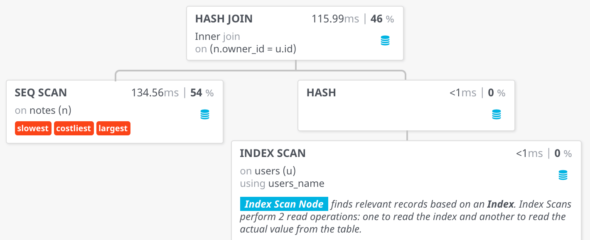
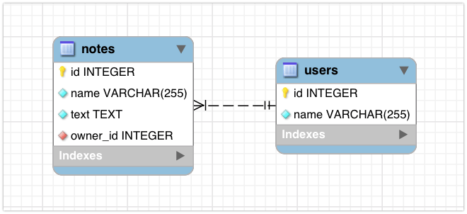
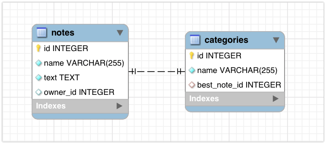

Базы данных, часть II
Баженова Анна
Сегодня в программе
- JOIN
- Индексы
- ORM
JOIN
Внешние ключи
FOREIGN KEY
CREATE TABLE notes (
id SERIAL PRIMARY KEY,
name VARCHAR(255) NOT NULL,
text TEXT,
owner_id INTEGER,
CONSTRAINT fk_notes_users FOREIGN KEY (owner_id)
REFERENCES users (id)
);
FOREIGN KEY
CREATE TABLE notes (
id SERIAL PRIMARY KEY,
name VARCHAR(255) NOT NULL,
text TEXT,
owner_id INTEGER REFERENCES users (id)
);
FOREIGN KEY
ALTER TABLE notes
ADD CONSTRAINT fk_notes_users
FOREIGN KEY (owner_id)
REFERENCES users (id);
Виды JOIN
- INNER
- LEFT OUTER
- RIGHT OUTER
- FULL OUTER
- CROSS
Данные
users | notes |
| |
id name | id name owner_id |
-- ------ | -- ----- -------- |
1 Олег | 1 Books 1 |
2 Сергей | 2 Films 1 |
3 Михаил | 3 Music 2 |
| 4 Rules NULL |
| 5 Markdown NULL |
INNER JOIN
SELECT users.id AS user_id,
users.name AS user_name,
notes.name AS note_name
FROM users
INNER JOIN notes
ON users.id = notes.owner_id;
users | notes |
| |
id name | id name owner_id |
-- ------ | -- ----- -------- |
1 Олег | 1 Books 1 |
2 Сергей | 2 Films 1 |
3 Михаил | 3 Music 2 |
| 4 Rules NULL |
| 5 Markdown NULL |
users | notes |
| |
id name | id name owner_id |
-- ------ | -- ----- -------- |
1 Олег | 1 Books 1 |
2 Сергей | 2 Films 1 |
3 Михаил | 3 Music 2 |
| 4 Rules NULL |
| 5 Markdown NULL |
INNER JOIN
user_id user_name note_name
------- --------- ---------
1 Олег Books
1 Олег Films
2 Сергей Music
OUTER JOIN
- LEFT OUTER JOIN
- RIGHT OUTER JOIN
- FULL OUTER JOIN
LEFT JOIN
SELECT users.id AS user_id,
users.name AS user_name,
notes.name AS note_name
FROM users
LEFT JOIN notes
ON users.id = notes.owner_id;
LEFT JOIN
user_id user_name note_name
------- --------- ---------
1 Олег Books
1 Олег Films
2 Сергей Music
3 Михаил NULL
RIGHT JOIN
SELECT users.id AS user_id,
users.name AS user_name,
notes.name AS note_name
FROM users
RIGHT JOIN notes
ON users.id = notes.owner_id;
RIGHT JOIN
user_id user_name note_name
------- --------- ---------
1 Олег Books
1 Олег Films
2 Сергей Music
NULL NULL Rules
NULL NULL Markdown
FULL JOIN
SELECT users.id AS user_id,
users.name AS user_name,
notes.name AS note_name
FROM users
FULL JOIN notes
ON users.id = notes.owner_id;
FULL JOIN
user_id user_name note_name
------- --------- ---------
1 Олег Books
1 Олег Films
2 Сергей Music
3 Михаил NULL
NULL NULL Rules
NULL NULL Markdown
CROSS JOIN
SELECT users.id AS user_id,
users.name AS user_name,
notes.name AS note_name
FROM users
CROSS JOIN notes;
SELECT users.id AS user_id,
users.name AS user_name,
notes.name AS note_name
FROM users, notes;
CROSS JOIN
user_id user_name note_name
------- --------- ---------
1 Олег Books
1 Олег Films
1 Олег Music
1 Олег Rules
1 Олег Markdown
2 Сергей Books
2 Сергей Films
... ... ...
Индексы
Выбираем самые важные колонки и переносим их:
- в оптимальную для поиска структуру (например, дерево или хэш-таблица)
- в оперативную память (для более быстрого доступа)
Создание индекса
CREATE INDEX user_name_idx ON users (name);
`B-TREE` индекс
Создается по умолчанию для строк и чисел. Ускоряет следующие операции:
- Сравнение
-
id = 1 (аналогично >, <, >=, <=) -
id BETWEEN 1 AND 5
-
- Поиск по префиксу для строк (
name LIKE 'ab%') - Сортировка (
ORDER BY id)
Составные типы
- array
- point
- range
- hstore (словарь)
Составные типы
Для них есть специальные типы индексов, которые поддерживают определенные операции над каждым типом.
- Проверка на то, что в массиве строк есть строка
WHERE tags @> ARRAY['javascript'];
- Проверка на то, что точка лежит в прямоугольнике
WHERE point <@ BOX '(2,1),(7,4)'
Индексы по выражениям
CREATE INDEX users_lower_name ON users (lower(name));
CREATE INDEX users_data ON users (data ->> 'field');
Составной индекс
SELECT * FROM notes
WHERE name = 'Books' AND owner_id = 1;
CREATE INDEX users_name_owner_id ON notes (name, owner_id);
Пример: индекс на тройку (x,y,z)
- x = 1
- x = 1 AND y = 2
- x = 1 AND y = 2 AND z = 3
- y = 2
- z = 3
- y = 2 AND z = 3
Уникальный индекс
SELECT * FROM notes WHERE name = 'Unique book';
CREATE UNIQUE INDEX notes_name_idx ON notes (name);
Нюанс: NULL != NULL
Оптимизация запросов
Язык описания запросов - декларативный. Это означает, что мы описываем не то, как вычислить результат, а только то, каким он должен быть в терминах реляционной алгебры.
Но на самом деле запрос можно выполнить разными способами, дающими один результат, но разную производительность.
Как выбрать наилучший?
Планировщик запросов
В PostgreSQL, как и в других SQL БД, есть планировщик запросов. На вход он получает SQL-запрос, а выдает наиболее оптимальный план выполнения
Какие факторы влияют на решение планировщика?
- индексы
- размер таблиц
- статистика по значениями в каждой колонке:
- часто встречающиеся значения
- гистограмма, отражающая примерное распределение
На что влияет план?
- какие индексы будут использоваться
- как именно будет выполняться JOIN (есть несколько способов)
Заметили, что какой-то запрос очень долго работает. Как нам понять, почему?
EXPLAIN SELECT ...; - выводит план запроса и предполагаемую "стоимость" выполнения
EXPLAIN ANALYZE SELECT ...; - то же самое, но при этом выполняет запрос
и показывает время, затраченное на его выполнение
Практический пример
Есть база с миллионом пользователей и миллионом заметок, случайно распределенных между ними. Хотим получить пользователя с именем "Анна" и все ее заметки
Фильтрация по имени
EXPLAIN ANALYZE
SELECT id, name
FROM users
WHERE name = 'Анна';
Получаем следующий план запроса
Seq Scan on users (cost=20834)
Filter: ((name)::text = 'Анна'::text)
Rows Removed by Filter: 988699
Execution Time: 98.147 ms
Seq Scan- мы полностью сканируем всю таблицу на диске (очень плохо)Rows Removed by Filter- отфильтровали почти всех пользователейcost- приблизительная оценка "стоимости" выполнения, вычисленная планировщикомExecution Time- запрос выполнялся 98 миллисекунд
Создадим индекс на поле name
CREATE INDEX users_name ON users (name);
Index Scan using users_name on users (cost=8.44)
Index Cond: ((name)::text = 'Анна'::text)
Execution Time: 0.048 ms
Index Scan using users_name- использовали новый индексcost= 8.44 (было 20834)Execution Time= 0.048 мс (было 98 мс)
Добавим в запрос заметки
EXPLAIN ANALYZE
SELECT u.name, n.name
FROM users u
JOIN notes n on n.owner_id = u.id
WHERE u.name = 'Анна';
План:
Hash Join
Hash Cond: (n.owner_id = u.id)
-> Seq Scan on notes n
-> Hash
-> Index Scan using users_name on users u
Index Cond: ((name)::text = 'Анна'::text)
Execution Time: 252.713 ms
Index Scan- ищем пользователя по имени, используем индексHash- для полученных пользователей строим хэш-таблицу по значениям idSeq Scan on notes- сканируем все заметки (опять плохо)Hash Join- для каждой заметки ищем в хэш-таблице пользователя по owner_id и соединяемExecution Time= 252.713 мс
Добавим индекс на поле owner_id
CREATE INDEX notes_owner_id ON notes (owner_id);
Nested Loop
-> Index Scan using users_name on users u
Index Cond: ((name)::text = 'Анна'::text)
-> Index Scan using notes_owner_id on notes n
Index Cond: (owner_id = u.id)
Execution Time: 0.054 ms
Nested Loop- сначала находим пользователей, а затем для каждого из них в цикле ищем заметки- нет
Seq Scan Execution Time= 0.054 мс (было 252.713 мс)
Полезный сервис для визуализации плана запроса
Плюсы индексов
- позволяют фильтровать и сортировать гораздо быстрее
- позволяют гарантировать уникальность значений в колонке
Минусы индексов
- значения хранятся и в таблице, и в индексе, поэтому операции изменения данных будут работать медленнее из-за необходимости обновления индекса
- занимает место в оперативной памяти, которая не бесконечна, поэтому нужно помещать в индексы только самые необходимые колонки
- чтобы эффективно использовать индексы, нужно хорошо знать структуру базы и иметь представление о том, какие запросы она будет обрабатывать
ORM
Object-Relational Mapping
Установка
npm install pg
npm install sequelize
npm install sequelize-typescript@canary
Подключение к DB
import { Sequelize, SequelizeOptions } from 'sequelize-typescript';
const sequelizeOptions: SequelizeOptions = {
// connection
host: 'localhost',
port: 5432,
username: 'user',
password: 'pass',
database: 'dbname',
// db options
dialect: 'postgres' // 'mysql', 'sqlite', 'mariadb', 'mssql'
};
const sequelize = new Sequelize(sequelizeOptions);
Модели
Модели. Объявление
import { Model, Table } from 'sequelize-typescript';
@Table
class Note extends Model<Note> {}
Модели. Атрибуты
@Table
class Note extends Model<Note> {
@Column(DataType.INTEGER)
id: number;
}
Именование
@Table
class Note extends Model<Note> {
@Column({
type: DataType.INTEGER,
field: 'owner_id'
})
ownerId: number;
}
Типы данных
Строковые
| PostgreSQL | Sequelize |
| CHAR | CHAR |
| VARCHAR(255) | STRING(255) |
| TEXT | TEXT |
Числовые
| PostgreSQL | Sequelize |
| INTEGER | INTEGER |
| BIGINT | BIGINT |
| REAL | REAL |
| DOUBLE PRECISION | DOUBLE |
| DECIMAL | DECIMAL |
Даты
| PostgreSQL | Sequelize |
| TIMESTAMP WITH TIME ZONE | DATE / NOW |
| DATE | DATEONLY |
| TIME | TIME |
Другие
| PostgreSQL | Sequelize |
| ARRAY | ARRAY |
| JSON | JSON |
| JSONB | JSONB |
Модели. Атрибуты
@Table
class Note extends Model<Note> {
@AutoIncrement
@PrimaryKey
@Column(DataType.INTEGER)
id: number;
@AllowNull(false)
@Column(DataType.STRING)
name: string;
}
Модели. Getters & setters
@Table
class Note extends Model<Note> {
@Column(DataType.STRING)
get name(): string {
return 'It is ' + this.getDataValue('name');
}
set name(value: string) {
const text = value.replace(/\*(\w+)\*/g, '$1');
this.setDataValue('name', text);
}
}
'films to *watch*' -> 'films to watch'
Модели. Валидаторы
@Table
class Note extends Model<Note> {
@Is('Name', (value) => {
if (!/^[a-z]+$/i.test(value)) {
throw new Error(`Name contains invalid character!`);
}
})
@Column(DataType.STRING)
name: string;
}
Модели. Валидаторы
@Table
class User extends Model<User> {
@Contains('@yandex.ru')
@IsEmail
@Column(DataType.STRING)
email: string;
}
Модели. Конфигурация таблиц
@Table({
timestamps: true, // add 'created_at', 'updated_at'
paranoid: true, // add 'deleted_at'
underscored: true,
tableName: 'notes'
})
class Note extends Model<Note> {}
Импорт моделей
const sequelize = new Sequelize({
...
modelPaths: [__dirname + '/tables/user.ts']
});
sequelize.addModels([User, Category, Note]);
sequelize.addModels(['path/to/models']);
Создание таблиц
await sequelize.sync({ force: true }); // все таблицы
await Note.sync({ force: true }); // только конкретную
Удаление таблицы
await Note.drop();
CRUD
Create
await Note.create({
name: 'Books',
text: 'Books to read'
});
Create. bulk
await Note.bulkCreate([
{
name: 'Books',
text: 'Books to read',
ownerId: 3
},
{
name: 'Films',
text: 'Films to watch',
ownerId: 1
}
]);
Read
const note = await Note.findOne({
where: {
name: 'Films'
}
});
const text = note.text;
Read. Projection
const note = await Note.findOne({
where: {
name: 'Films'
},
attributes: ['id', 'text', ['name', 'title']]
});
Read. Операторы
import { Op } from 'sequelize';
const userModel = await User.findOne({
where: {
[Op.or]: [
{ name: { [Op.like]: 'А%' } },
{ saveDate: { [Op.gt]: '2018-04-09 13:25:13' } }
]
}
});
Read. Поиск по id
const note = await Note.findOne({
where: { id: 23 }
});
const note = await Note.findByPk(23);
Read. Все записи
const notes = await Note.findAll({
where: {
ownerId: 1
},
attributes: ['id', 'name']
});
Read. Sort, skip, limit
const notes = await Note.findAll({
order: [
['name', 'DESC']
],
offset: 2,
limit: 2
});
Read. Count
const count = await Note.count({
where: {
ownerId: 1
}
});
Read. Group by
const count = await Note.findAll({
attributes: [
'ownerId',
[
Sequelize.fn('count', Sequelize.col('name')),
'countNotes'
]
],
group: ['ownerId']
});
Update
await Note.update(
{
text: 'My favorite books'
},
{
where: { name: 'Books' }
}
);
Update. Active record
const note = await Note.findOne({
where: { name: 'Books' }
});
note.text = 'Important books to read';
await note.save();
Delete
await Note.destroy({
where: { id: 23 }
});
const note = await Note.findOne({
where: { id: 23 }
});
await note.destroy();
Комбинации. findOrCreate
const note = await Note.findOrCreate({
where: { name: 'Books' },
defaults: {
name: 'Books',
text: 'Books to read',
ownerId: 1
}
});
JOIN
Внешние связи. ForeignKey
class Note extends Model<Note> {
@ForeignKey(() => User)
@Column({
type: DataType.INTEGER,
field: 'owner_id'
})
ownerId: number;
}
Внешние связи. BelongsTo
Внешние связи. BelongsTo
class Note extends Model<Note> {
...
@BelongsTo(() => User)
user: User;
}
Внешние связи. HasMany

Внешние связи. HasMany
class User extends Model<User> {
...
@HasMany(() => Note)
notes: Note[];
}
Внешние связи. HasOne
Внешние связи. HasOne
class Note extends Model<Note> {
...
@HasOne(() => Category, 'best_note_id')
category: Category;
}
Внешние связи
ПодробнееДанные
users | notes | categories
| |
id name | id name owner_id | id name best_note_id
-- ------ | -- ----- -------- | __ _____ ____________
1 Олег | 1 Books 1 | 1 study 1
2 Сергей | 2 Films 1 | 2 fun 3
3 Михаил | 3 Music 2 |
| 4 Rules NULL |
| 5 Markdown NULL |
Include
await User.findAll({
attributes: ['name'],
include: [
{
model: Note,
attributes: ['name']
}
]
});
[
{
name: 'Олег',
notes: [
{ name: 'Films' },
{ name: 'Books' }
]
},
{
name: 'Сергей',
notes: [{ name: 'Music' }]
},
{
name: 'Михаил',
notes: []
}
]
Include. Where
await User.findAll({
attributes: ['name'],
include: [
{
model: Note,
where: {
name: {
[Op.or]: [
{ [Op.like]: 'F%' },
{ [Op.like]: 'M%' }
]
}
},
attributes: ['name']
}
]
});
[
{
name: 'Олег',
notes: [
{ name: 'Films' }
]
},
{
name: 'Сергей',
notes: [
{ name: 'Music' }
]
}
]
Include. Where + required
await User.findAll({
attributes: ['name'],
include: [
{
model: Note,
where: {
name: {
[Op.or]: [
{ [Op.like]: 'F%' },
{ [Op.like]: 'M%' }
]
}
},
attributes: ['name'],
required: false
}
]
});
[
{
name: 'Олег',
notes: [{ name: 'Films' }]
},
{
name: 'Сергей',
notes: [{ name: 'Music' }]
},
{
name: 'Михаил',
notes: []
}
]
Include. Multiple join
const users = await User.findAll({
attributes: ['name'],
include: [
{
model: Note,
attributes: ['name'],
include: [
{
model: Category,
attributes: ['name']
}
]
}
]
});
Include. Multiple join
[
{
name: 'Олег',
notes: [
{
name: 'Films',
category: null
},
{
name: 'Books',
category: {
name: 'study'
}
}
]
},
...
...
{
name: 'Сергей',
notes: [
{
name: 'Music',
category: {
name: 'fun'
}
}
]
},
{
name: 'Михаил',
notes: []
}
]
Транзакции
await sequelize.transaction(async function(t) {
await User.increment(
'account',
{ by: -50, where: { id: 1 }, transaction: t }
);
await User.increment(
'account',
{ by: 50, where: { id: 2 }, transaction: t }
);
});
Миграции
Sequelize CLI
npm install sequelize-cli
.sequelizerc
const path = require('path');
const DB_DIR = __dirname + '/db';
module.exports = {
'config': path.resolve(DB_DIR, 'config.js'),
'migrations-path': path.resolve(DB_DIR, 'migrations'),
'models-path': path.resolve(DB_DIR + 'tables'),
'seeders-path': path.resolve(DB_DIR, 'seeders')
};
migrations/1553446742822-add-user-column.ts
import { QueryInterface, DataTypes } from 'sequelize';
export = {
async up(queryInterface: QueryInterface) {
await queryInterface.addColumn('users', 'account', {
type: DataTypes.INTEGER,
allowNull: false,
defaultValue: 0
});
},
async down(queryInterface: QueryInterface) {
await queryInterface.removeColumn('users', 'account');
}
};
Команды
npx sequelize db:migrate
// new table SequelizeMeta
npx sequelize db:migrate:undo
npx sequelize db:migrate:status